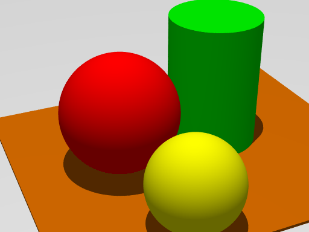
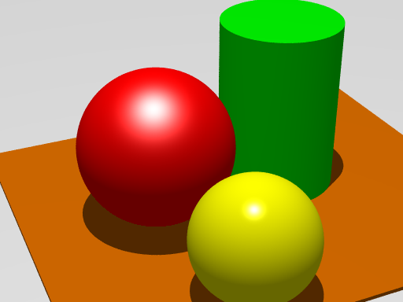
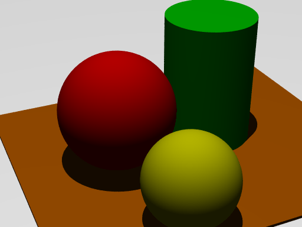
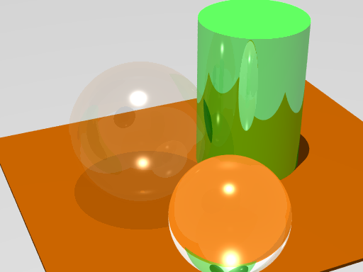
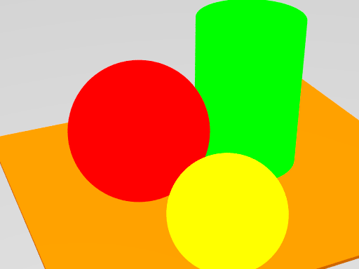
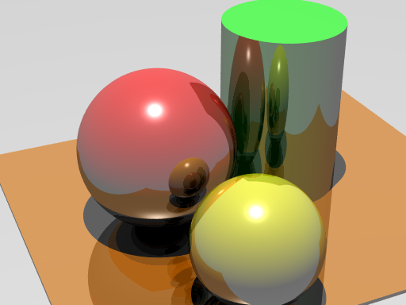

|
|
Assignment 04
-
(20) Complete the following exercises from the textbook: Pages 71-73, questions 1-7.
-
(30) The file startHere.pov creates this image:

a) Modify startHere.pov to produce a new image that looks like the following, and name the new file shiny.pov:

b) Create a new file dark.pov and produce an image like this:

c) Create a new file transparent.pov and produce an image like this:

d) Create a new file flat.pov and produce an image like this:

e) Create a new file reflective.pov and produce an image like this:

Submit your .pov files and bmp images as answers to each part of this question.
-
(50) Rain. Based on the knowledge you have acquired in POVRay, create a scene of something you are interested in. The scene must possess one element: it has the give the impression that rain is falling over the scene.
Use a sor or lathe to generate the rain drop. Use loops and the random number generator to create the rain and place them randomly across the scene. Don't forget that raindrops are both reflective and refractive objects.
This question is about storytelling, creativity and technical execution, so let your creativity loose.
The grade for this question will be based on the quality of the scene and whether you used the required tools (lathe or sor, rand(), seed(), and programming loops).
back to the Assignment page
|